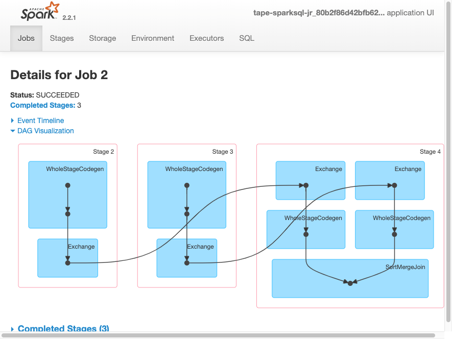
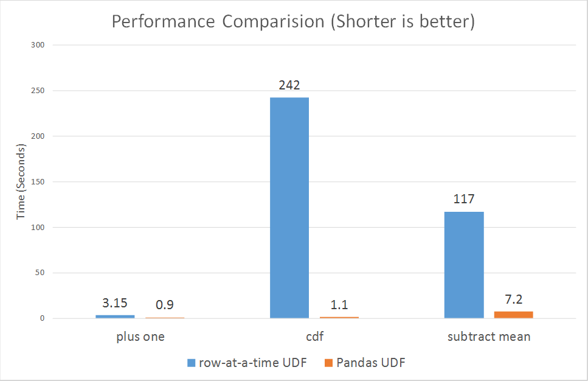

Week 7: Spark DataFrames and Spark SQL
DSAN 6000: Big Data and Cloud Computing
Fall 2025
Monday, October 6, 2025
Spark: a Unified Engine
Connected and extensible

Review of PySparkSQL Cheatsheet
https://s3.amazonaws.com/assets.datacamp.com/blog_assets/PySpark_SQL_Cheat_Sheet_Python.pdf
collect CAUTION

Spark Diagnostic UI: Understanding how the cluster is running your job
Spark Application UI shows important facts about you Spark job:
- Event timeline for each stage of your work
- Directed acyclical graph (DAG) of your job
- Spark job history
- Status of Spark executors
- Physical / logical plans for any SQL queries
Tool to confirm you are getting the horizontal scaling that you need!
Adapted from AWS Glue Spark UI docs and Spark UI docs
Spark UI - Event timeline

Spark UI - DAG
Spark UI - Job History

Spark UI - Executors

Spark UI - SQL

PySpark User Defined Functions
UDF Workflow

UDF Code Structure
Clear input - a single row of data with one or more columns used
Function - some work written in python that process the input using python syntax. No PySpark needed!
Clear output - output with a scoped data type
UDF Example
Problem: make a new column with ages for adults-only
+-------+--------------+
|room_id| guests_ages|
+-------+--------------+
| 1| [18, 19, 17]|
| 2| [25, 27, 5]|
| 3|[34, 38, 8, 7]|
+-------+--------------+Adapted from UDFs in Spark
UDF Code Solution
```{python}
from pyspark.sql.functions import udf, col
@udf("array<integer>")
def filter_adults(elements):
return list(filter(lambda x: x >= 18, elements))
# alternatively
from pyspark.sql.types IntegerType, ArrayType
@udf(returnType=ArrayType(IntegerType()))
def filter_adults(elements):
return list(filter(lambda x: x >= 18, elements))
```+-------+----------------+------------+
|room_id| guests_ages | adults_ages|
+-------+----------------+------------+
| 1 | [18, 19, 17] | [18, 19]|
| 2 | [25, 27, 5] | [25, 27]|
| 3 | [34, 38, 8, 7] | [34, 38]|
| 4 |[56, 49, 18, 17]|[56, 49, 18]|
+-------+----------------+------------+Alternative to Spark UDF
Another UDF Example
- Separate function definition form
```{python}
from pyspark.sql.functions import udf
from pyspark.sql.types import LongType
# define the function that can be tested locally
def squared(s):
return s * s
# wrap the function in udf for spark and define the output type
squared_udf = udf(squared, LongType())
# execute the udf
df = spark.table("test")
display(df.select("id", squared_udf("id").alias("id_squared")))
```- Single function definition form
Can also refer to a UDF in SQL
- Consider all the corner cases
- Where could the data be null or an unexpected value
- Leverage python control structure to handle corner cases
UDF Speed Comparison

Costs:
- Serialization/deserialization (think pickle files)
- Data movement between JVM and Python
- Less Spark optimization possible
Other ways to make your Spark jobs faster source:
- Cache/persist your data into memory
- Using Spark DataFrames over Spark RDDs
- Using Spark SQL functions before jumping into UDFs
- Save to serialized data formats like Parquet
Pandas UDF
From PySpark docs - Pandas UDFs are user defined functions that are executed by Spark using Arrow to transfer data and Pandas to work with the data, which allows vectorized operations. A Pandas UDF is defined using the pandas_udf as a decorator or to wrap the function, and no additional configuration is required. A Pandas UDF behaves as a regular PySpark function API in general.
Another example
```{python}
@pandas_udf("first string, last string")
def split_expand(s: pd.Series) -> pd.DataFrame:
return s.str.split(expand=True)
df = spark.createDataFrame([("John Doe",)], ("name",))
df.select(split_expand("name")).show()
+------------------+
|split_expand(name)|
+------------------+
| [John, Doe]|
+------------------+
```Scalar Pandas UDFs
- Vectorizing scalar operations - one plus one
- Pandas UDF needs to have same size input and output series
UDF Form
Pandas UDF Form - faster vectorized form
Grouped Map Pandas UDFs
- Split, apply, combine using Pandas syntax
Comparison of Scalar and Grouped Map Pandas UDFs
Input of the user-defined function:
- Scalar: pandas.Series
- Grouped map: pandas.DataFrame
Output of the user-defined function:
- Scalar: pandas.Series
- Grouped map: pandas.DataFrame
Grouping semantics:
- Scalar: no grouping semantics
- Grouped map: defined by “groupby” clause
Output size:
- Scalar: same as input size
- Grouped map: any size

Lab Time!
References
DSAN 6000 Week 7: Spark Clusters